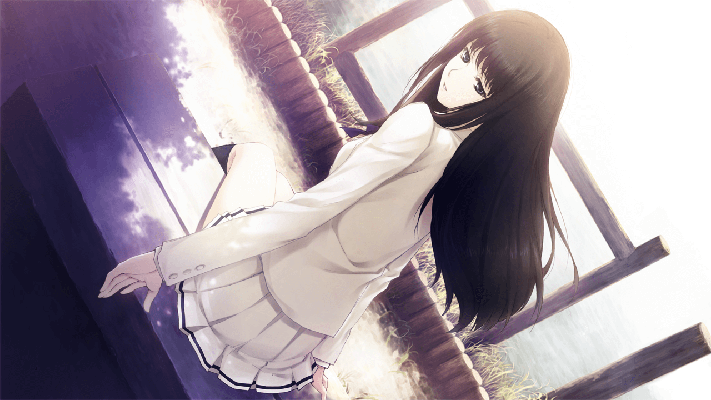
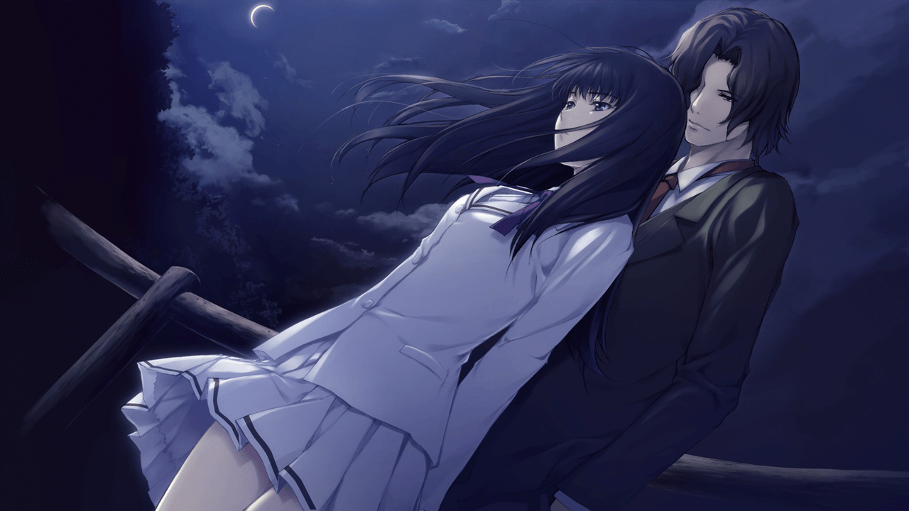
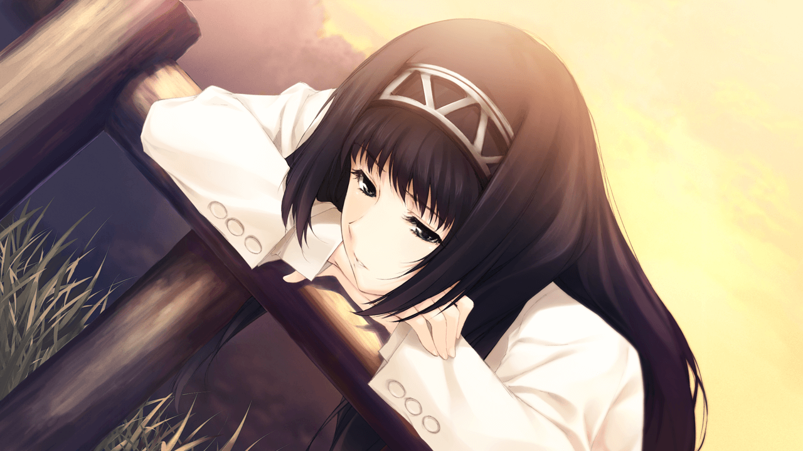
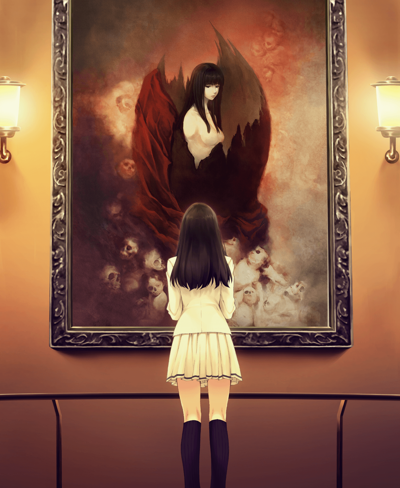
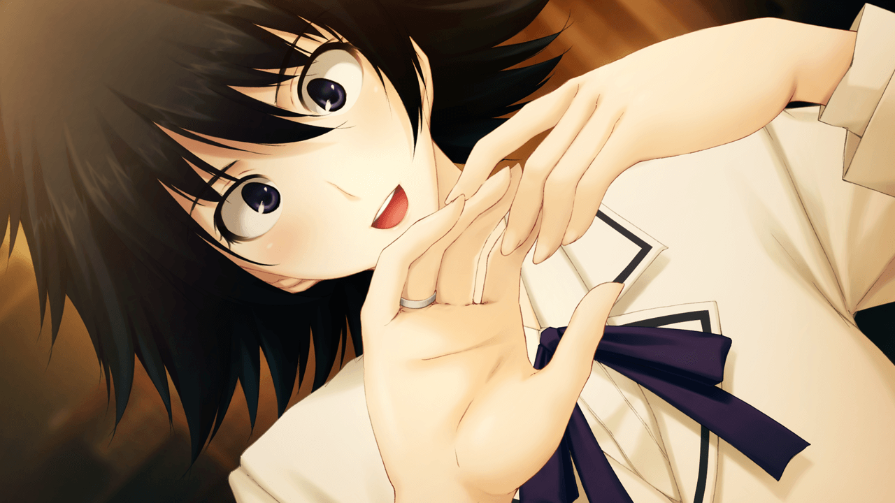
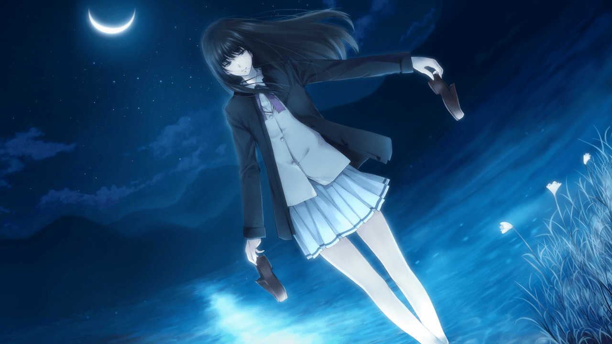
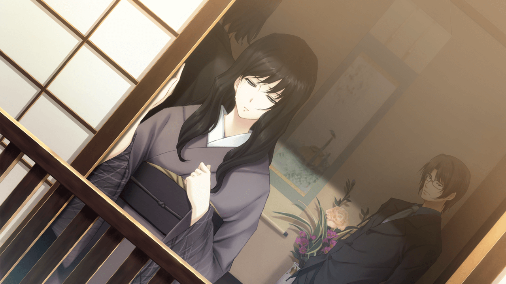
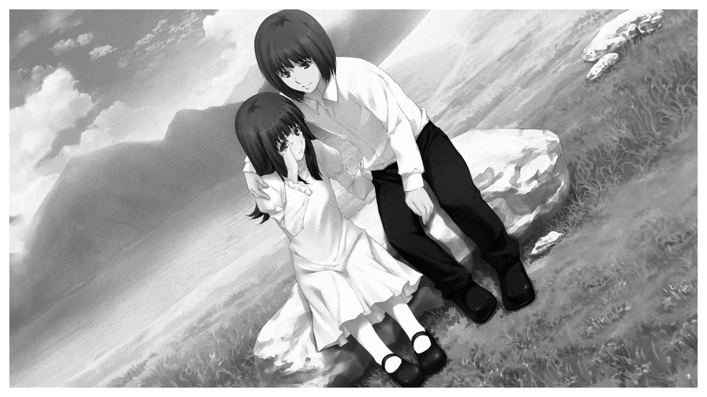
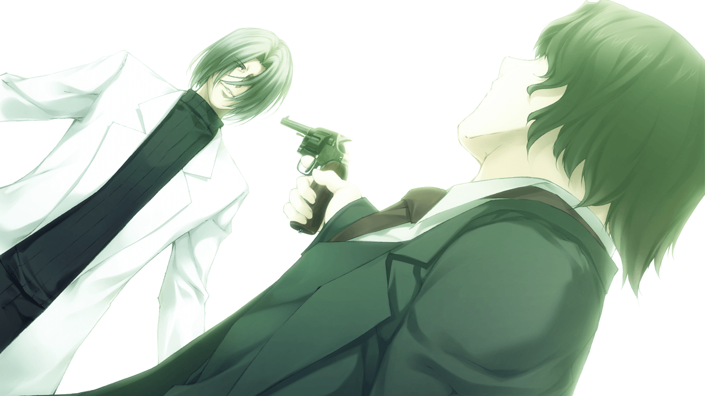
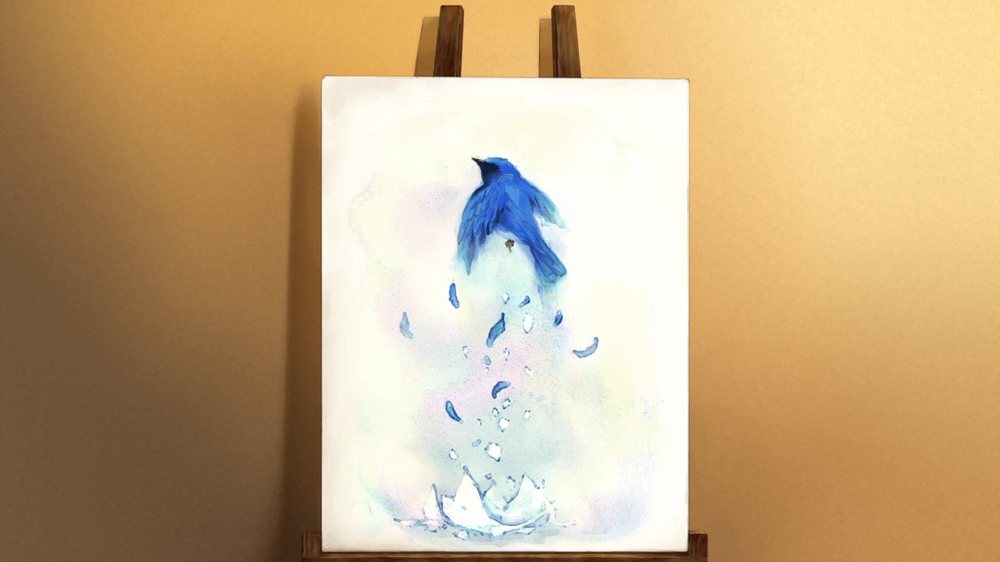

壳之少女
注：为补完关键剧情，本文收录了一些其他分支路线的内容，在文中将以红色字体示出。
序词 心理测验
昭和31年 1月19日
时坂紫自从父母因飞机失事去世后就与身为侦探的哥哥时坂玲人住在一起，但她却很喜欢昆虫学，兴趣是饲养蜗牛、龙虱等昆虫。她就读于私立樱羽女子学校，有一位好友四十宫缀子。放学后，她去了哥哥的侦探事务所打扫卫生，之后两人一同回了家。玲人回家听紫说她的一个后辈昨晚没有回家，但玲人并没有放在心上。
昭和31年 1月20日
次日玲人去了自己常去的那家咖啡馆“月世界”，那里的老板娘早与他熟识，名叫叶月杏子，是一位寡妇，她的丈夫在七年前因驻日美军引发的交通事故身亡了，但坚强的她现在已经走出了那时的阴影。她告诉他自己想找个能给店里帮忙的服务员。当晚回到事务所后，玲人又为曾经的同事，警官鱼住夹三解决了一起枪击案件。
序歌 幻影城
昭和31年 2月29日
鱼住来到井之头公园。早晨有目击者报案，公园中央发现了被分尸的高度腐烂的头颅和四肢，其中只有尸体的双臂被包上了黑布，但并没有发现尸体的躯干。勉强可以从头颅分辨出是女性，现场判断死亡时间大约是两周前。据目击者称昨夜并没有动静，地面也没有血迹。对于不擅长搜查线索的鱼住来说几乎一筹莫展。没过几天，鱼住又被电话叫到了多磨灵园，昨晚目击者报告这里发现了一具脚部被点燃的女性尸体，也没有其他任何线索。面对日益增多的猎奇事件，认怂了的鱼住想到了向那个男人求助。
第一歌 二钱铜币
昭和31年 3月4日
玲人在上街帮紫买咖啡豆时感觉被跟踪了，于是绕路来到了井之头公园，却与自称刚才跟踪了他的朽木冬子相遇了。她知道玲人是一名侦探，并向他提出了自己的委托：寻找真正的她。

“请你找到真正的我。”
在月世界，他见到了月世界新雇佣的服务生雨宫初音。听说玲人是侦探她感到很惊讶，因为她之前在上野的雪白工作时，那里的另一名侦探高城秋五对她很照顾，还教会了她写字。
玲人回家后鱼住来访，请他出马调查最近的两起猎奇杀人案。据他说多磨陵园里的尸体除了左臂缺失外基本完整，但大部分被黑布包裹后埋在了土里，只有露在外面的脚被点燃了。而次日玲人看过现场后，认为凶手特意将尸体埋在浅坑中不是为了隐藏尸体，而是为了方便在尸体脚上点火。
晚上玲人回到家，紫所在学校的佐伯教头来访，委托玲人寻找两名失踪的女学生。其一是一月中旬失踪的西园唯，其二是两周前失踪的今邑春香。由于报警后迟迟没有消息才来委托玲人。联想到近来发现的两具女性尸体，玲人接受了他的委托。此外，佐伯还想请玲人作为特聘讲师进入学园调查情况。
第二歌 猎奇的后果
昭和31年 3月6日
早晨，玲人和鱼住来到了高城医院，从法医高城夏目那里听取了尸检报告。据她说，第一具尸体按腐败程度判断为死后一周，但按蛆的成长情况来看却是十二天左右，尸体上发现的指纹也没有比对出嫌疑人，只以测出血型为A型。此外，受害者的头的双腿切面有生活反应，而双臂则没有。第二具尸体被确认是名叫古泉萤的女学生，死亡时间是3月1日晚19点至24点之间。此外，除被柴刀切断的左臂切面有生活反应外，受害者还被凶手用菜刀摘除了子宫，并在腹中放入了外表被涂黑的蛋壳，下体有性交的痕迹但与性犯罪无关。
晚上回到事务所，玲人从黑布判断凶手是同一人，且第一具尸体从时间上判断可能是失踪的西园唯。这样，前往樱羽女子学园调查就很有必要了。
昭和31年 3月7日
玲人来到上野，帮高城夏目带礼物给老友兼原同事高城秋五。他的妻子上月和菜现在已经怀胎六个月了。提到让两人辞去警察的契机时，那是让两人都不愿提起的，六年前的“六识事件”。晚上，他和紫在聊天时也不由得想起了六年前，自己的未婚妻深山由记子……
昭和31年 3月8日
这是玲人去樱羽女校当特聘讲师的第一天。在这个气氛压抑的校园内，他在学生会长月岛织姬的带领下来到了保健室，见到了保健老师朱崎宁宁，但并没有什么收获。此外，他还再次见到了朽木冬子和她的好友水原透子，并要求这两个名字相同的少女对自己的身份保密。冬子也再次向他询问了寻找真正的自己的请求，并表示自己在绘画时能感受到自由，以及放空身心的感觉。晚上回家，紫告诉玲人冬子和透子都是和她同属美术部的，而冬子总给人一种很达观的感觉。
第三歌 蒙面的舞者
昭和31年 3月9日
玲人与紫在上学路上遇到了紫的好友四十宫缀子，她给人感觉十分活泼，与学园死气沉沉的氛围格格不入。课间，他认识了紫所在班级的班主任日下达彦，他也对学校里学生难以交流一事感到很苦恼，而且他还告诉玲人学校里禁止教师与学生关系过于亲密。当玲人来到保健室时，却遇到了身体状况不太好，在保健室里休息的冬子。据宁宁说，冬子经常因身体不适来保健室休息。此外，她还告诉玲人可以去找西园唯和今邑春香的好友佐东步，或者去找与西园唯同社团的紫询问情况。但就在他找人时，透子突然要求他不要接近冬子。
放学后，紫把玲人带到美术室，请他下周带她们美术部的学生一起前往市美术馆参观画家间宫心像的个人画展。之后玲人找到佐东步，她告诉玲人唯和春香人缘都很好，有很多朋友，只是正月后唯就看起来没什么精神，她认为唯一定是被卷入某种事件中了。
离开学校后玲人来到上野区，在美术馆前认识了一个外国人一般的职员史黛拉。而在回到事务所后，鱼住告诉他井之头公园的遗体身份已经查清了，是今邑春香。回家后他把这个消息告诉了紫，紫告诉他保健老师朱崎宁宁说最近学生病假和受伤的人数增多了。
昭和31年 3月10日
这天去学校前，玲人分析现在三名受害者虽然不都是一所学校的，但共通点都是失去了一部分肢体、被切除的子宫和那黑色的蛋壳。但即便他再次询问佐东步也没有得到什么有价值的线索，反而把自己是侦探这事暴露给了学生会长织姬。在与织姬的对话中，他了解到织姬也认为学校的规则对学生的束缚有些过于严苛了，可能会带来某些反效果。就在他回到办公室时，缀子找到他，说她听到学生中有“随身带一枚黑色鸡蛋，如果不破碎就能实现愿望，但如果破碎了就会被黑之圣母杀死”这样的流言。玲人拜托了保健老师宁宁后，她表示会帮他打听情况。放学后，冬子竟然来邀请他在明天的休息日去她家。虽然很惊讶但玲人还是答应了下来。
玲人来到井之头公园遇到织姬，才知道织姬家里家教极为严格，她每次外出时都会有保镖暗中监视着她。之后他回到学校想找宁宁问一下拜托的事，却发现宁宁以谈话为名，与学校里的女学生有着肉体关系。但晚上鱼住却找到玲人，告诉他井之头公园的遗体的指纹与今邑春香不匹配，而且自从西园唯的母亲去年秋天去世后，西园唯也患上了急性心律不齐症，一直都是独自生活，但她家里现在却空无一人，甚至连一点她生活的痕迹都找不到。
昭和31年 3月11日
第二天，玲人随冬子来到她家。冬子说现在她和她母亲以及伯父一起住，而她已经几乎记不得小时候发生的事了。在谈论到玲人当侦探的缘由时，玲人不由得说起了他在当警察时，自己的恋人被杀害了。正在这时，冬子的母亲千鹤回来了，玲人打了个招呼就乘机告退了，他感觉冬子和她母亲之间有着某种隔阂。但在冬子送他出门时，冬子的伯父——看起来跟玲人差不多年龄的朽木文弥来向玲人打了招呼，玲人注意到了他是左撇子。文弥称他接手了冬子祖父留下的小诊所在独自经营。

夜晚的井之头公园，玲人向冬子说起了当年恋人由记子被杀后，抓不到凶手的他陷入了迷茫和悲伤。虽然后来他重新振作了起来，但仍然一直没有从失去爱人的悲伤中走出来。冬子说他们都一样，都还没能找到自己真正的容身之所。
昭和31年 3月12日
刚起床，玲人就接到了鱼住的电话——猎奇杀人事件又出现了新的受害者，这次在石神井公园。受害者仍是一名年轻女性，遗体被黑布半包裹着，双眼被挖去，右臂缺失，后背有一道很长的伤口，头部被拧转180度朝向背后，下体同样遗失了子宫，并被塞入了黑色的蛋壳。但与其他受害者不同的是，这位受害者的口中被塞入了一张纸片，上面写了一些含有宗教词句的诗，而诗句描述的情状与尸体相似。
玲人随灵车来到了高城医院，夏目看了死者口中的纸条认为这是女性的字迹，玲人就请夏目进行字迹识别，此外他还提出了井之头公园中四肢和头颅分属不同的人的可能性。随后，玲人去上野见了高城秋五，向他说了黑布黑卵以及黑之圣母的传说等共同点。突然，秋五提到这次的事件与六年前的“六识事件”有相似之处。玲人表示他永远不会放过那个只知道名字的犯人——六识命。
傍晚，玲人来到樱羽学园采集了女生们的笔迹，并问佐东步拿到了西园唯写的一封信后回到家，在紫的提示下想起了纸片上的诗句出自但丁的《神曲·地狱篇》。与《神曲·地狱篇》中完整的第二十曲比对，第三具遗体上意义不明的伤口竟然完全吻合！此外，第十九曲也出现了燃烧的足部，是由于圣物买卖之罪；第二十曲中犯的罪是使用妖术；而第三曲中，出现了被虻和蜂蜇刺的刑罚，是由于“无为”——即袖手旁观什么都不做。但遗体上还出现了《神曲·地狱篇》中没有的元素，即黑布和黑卵。
第四歌 帕诺拉马岛奇谈
昭和31年 3月13日
玲人一早就去了高城医院，夏目告诉他昨天石神井公园的受害者是多岐川夕美，是大泉学园的学生，从8日傍晚开始就失踪了，与死亡时间也差不多吻合。死因是颈部扭转，右臂切面同样存在生活反应。其他特征与之前的受害者均一致，下体也有性交的痕迹但并不是性犯罪，但这名学生却留有堕胎的痕迹。在夏目详细调查后发现之前的第二名受害者也有堕胎经历。此外，这名受害者在死亡前还被注射了致死量的吗啡。玲人将收集的字迹交给夏目，夏目判断出纸片上的诗句正是出自失踪的西园唯之手。联系鱼住就堕胎记录进行详查后，鱼住告诉玲人西园唯确实正与某个男人交往。
下午玲人前往学校，紫告诉他一年级学生在井之头公园事件发生后，在公园里将披着黑布玩耍的孩子们看成了黑之圣母，但这也说明黑之圣母的传说在一年级这个年龄段的学生里非常流行，并且西园唯和今邑春香在失踪前应该是知道这个传说的。然后玲人找到宁宁询问她俩堕胎的事，宁宁说她们是在朽木病理研究院，也就是冬子爷爷开设的医疗机构做的堕胎手术。此外，紫的班主任日下老师身体似乎也不太好，一直在吃朽木病理研究院开的治头痛的药。他同样证实了紫关于黑之卵在学生中流传的说法。
玲人立即前往朽木病理研究所，见到了所长朽木靖匡，正是冬子的爷爷。玲人意外得知他和间宫心像竟然是老友，间宫心像还送过画给他。一名名叫村濑直己的医生很不耐烦地将玲人带到妇产科。据产科的山之内医生说，最近她们这个年龄段有很多女生怀孕，而且另外两名受害者古泉萤和多岐川夕美也是在他们这里做的堕胎手术。根据女生们的反应，她认为可能和强奸或卖春有关。玲人结合解剖结果判断，这应该是有组织的卖春。
在月世界与鱼住碰面后，鱼住说古泉萤的父亲是新兴宗教的教祖，如今陷入了金钱纠纷中；而多岐川夕美的母亲是一位占卜师，被投诉贩卖高价“法器”。从这个意义上来说，她们被杀时的状态就与《神曲·地狱篇》中的描述一致了。此外，鱼住还确认了与西园唯关系很近的男人，是一个名叫森夜月的摄影家，他经常以西园唯为模特拍照。而玲人看到他的照片后才发现自己刚才在朽木病理研究院外好像看到过他。碰巧鱼住得到的情报显示他明天会去美术馆的间宫心像画展，玲人决定去会一会他。

月岛织姬
玲人来到井之头公园遇到了织姬，织姬向玲人倾诉说从前每天漠然而唯唯诺诺的生活让她找不到活着的意义。玲人告诉她她的路还很长，即使一步走错也可以立刻改正。
傍晚玲人又来到高城医院，夏目告诉他已经确认，写有《神曲》诗句的纸片上的指纹与西园唯所写的信上的指纹相同，并且，最初那具被分尸的遗体的指纹也与此吻合。
第五歌 化人幻戏
昭和31年 3月14日
四人来到美术馆后，史黛拉向玲人介绍了间宫心像。他从大正末期就开始绘画，由于经历了二战，绘画内容大多表现了生与死等的映像。而这次的展览主题是《再生》，主要是以基督教故事中的耶稣复活为主。而展览中最大的那幅画，则是间宫心像在终战前夕时所绘，被誉为他的最高杰作的画——《壳之少女》。而画中却是半个黑色的蛋壳中，端坐着一位与冬子极为相似的少女。看完展览后玲人找到森夜月，但他爽快地承认了他认识西园唯，但表现得并不知道西园唯已经失踪了。玲人与他约了晚上在夜世界详谈。

《壳之少女》
玲人来到井之头公园，就黑布一事询问玩耍的孩子，孩子们说那黑布是被风吹来挂在树上的，玲人设法弄到了一块并交给了鱼住。
然后玲人再次回到井之头公园遇到了织姬，她说她是罪无可赦的大罪人，在学园里的形象只是自己装出来的虚伪的形象。
晚上，玲人从森夜月那里得到的一张西园唯的照片上，赫然看到西园唯曾随身将一个黑色的蛋挂在自己的包上，并且西园唯还曾告诉他她的很多朋友都带着相同的黑卵。玲人认为在佐东步不知道黑卵的前提下，西园唯应该还有着学园以外的交际圈。从月世界离开时他遇到了散步的朽木文弥。据他说朽木家族里没有女性做过绘画的模特。回到家后，缀子说她今晚要住下，玲人就乘机委托她和紫在学校中调查关于黑卵的详细情报。但据缀子说学生会长织姬可能与这一事件脱不了干系。
昭和31年 3月15日
次日，缀子告诉玲人，一年级的学生告诉她必须成为“分裂教”的一员才能得到黑卵。并且校里校外之前还有分裂教的成员，但现在似乎已经见不到了。 而不良集团分裂教的主要活动就是卖春和毒品相关。
玲人找到了织姬，她终于向玲人坦白了一切。原来不仅是在学校，她在家里也是没有自由的。无论何时，她都被“壳”束缚着。但就在去年，她想着要反抗这一切，就创立了“分裂教”这一组织，收纳了不少压抑自我而活的学生，不仅是樱羽学校，还有其他学校的女生。在这里，她们可以从放纵的背德感中找到愉悦。这就是她打破束缚自己的“壳”的方式。本来黑之卵、黑之圣母等只是按小说《尼亚尼斯之卵》设定而创作的谣言，但“分裂教”的成员们却接二连三地被杀害。织姬十分确信，下一个就轮到她了——她的身体，也早已被数不清的男性所玷污。
放学后，佐伯找到玲人，告诉他月岛织姬自从早上出门后就失踪了。然而，无论他再怎么寻找都毫无进展。
第六歌 月亮和手套
昭和31年 3月16日
彻夜寻找未果的玲人一早就接到鱼住的电话，在武藏关公园发现了月岛织姬的遗体。遗体背靠着一棵树的根部，最早在深夜一点时被目击。她全身被锐器划出了很多处伤口，嘴里手腕有淤血的痕迹，左腿不翼而飞，下体与之前的受害者别无二致，但裙子口袋里却有一张被折起的文库本封面。此外，她的口部被刀刃划开直到耳根，但嘴里却被塞着另半张西园唯笔迹的《神曲》。由于织姬家是贵族家庭而无法立刻搜查，玲人决定自己先独自前往寻找有关分裂教的线索。
凭借老师的身份，玲人顺利地进入了织姬的房间，并在书柜下的暗格中找到了一本精装封面，名为《尼亚尼斯之卵》的幻想小说，作者一位名叫葛城心的新兴作家。而书中的内容正与黑之卵，黑之圣母有关。书籍独特的黑白封面让玲人想起西园唯的照片中也出现了这本书。他来到月世界，读到此书所述一位少女巡游地狱，将黑之卵交给罪人们。而书中罪人们所受的刑罚与《神曲》极为相似。若十三日内卵不破碎罪人即被拯救，否则就会被黑之圣母所杀。而罪人为了得到黑之卵必须奉献出自己的一部分身体，而少女收集这些身体来制造她的母亲。少女认为母亲的头部就在自己背负的巨大黑卵中，但当她打破卵一切又重归虚无。也就是说，这一系列杀人事件并非参照《神曲》，而是这本《尼亚尼斯之卵》。于是，玲人认为有必要与葛城心谈一谈。从鱼住那里得到了葛城心事务所的地址后，他见到了葛城心本人。葛城心提到了去年《尼亚尼斯之卵》发售后，他还给西园唯签过名。
访谈结束后，玲人来到高城医院，夏目说织姬的死因是失血过多，所有伤口都存在生活反应。同样，她也被事先注射了吗啡，但并没有当场死亡，而是在凌晨一时附近——即最早被发现时死亡的。此外，她虽然也不是处女了，但并没有堕胎的痕迹。玲人就此事再次询问了朽木病理研究所的山之内小春医生，但她却说在学校所有学生的定期检查记录中，并没有织姬的那一份。在玲人问到之前西园唯来院堕胎时，小春说她确实是在人陪同下来的。在看玲人展示的班主任日下达彦的照片时，她说虽然不是他，但他曾来过医院的精神科看病。
找到精神科医生西藤环后，他告诉玲人陪同西园唯的正是她的哥哥。原来在西园唯的家庭离婚之后，她就随了母姓，而她哥哥仍是原父姓——也就是日下达彦。十余年后的现在，妹妹已经不认识他了，而他却只能以老师的身份对待妹妹。而且，今年年初以后他就再也没有来看过病。
第七歌 人间椅子
昭和31年 3月17日
今天是玲人未婚妻由记子的第六个祭日。在墓地，他又遇到了尾随他而来的冬子，两人一起祭奠由记子。在由记子的墓前，玲人又想起了那个恐怖的事件。六年前，一名怀孕的娼妇被残忍杀害，为后续的一系列猎奇孕妇杀害事件拉开了序幕。在五名妇女被杀害后，由记子也在三月中旬，突然消失了。所有的怀疑都指向了医院的助产士六识命，但战后混乱的情形下完全无法找到有关六识命的任何线索，只留下了“六识命”这一个名字。但有一天，由记子戴着婚戒的右手被寄到了玲人家中，而随后她那被钉在十字架上的无头遗体就在近处的一条水沟里被发现了……
回到井之头公园，冬子提起了自己的事。她认为没有人爱着自己，但她现在对玲人所抱持的感情，对她来说是很重要的。那份感情不似爱情，只是两个不敢走出自己的“壳”的胆小鬼一起抱团取暖罢了。但玲人却抱住冬子吻了她。
回到事务所后，玲人收到了夏目的调查结果。织姬身上的那一角小说《尼亚尼斯之卵》的封面上除了织姬的指纹，还有一个身份不明的男人的指纹。但玲人回忆起她房间里的小说封面是完好的。这也许说明了小说是凶手持有的，那么这个指纹很可能是凶手的。同时，鱼住打电话来告诉玲人，已经确定所有受害者都持有那本小说《尼亚尼斯之卵》。
玲人分析最初井之头公园的尸块中头颅和双腿可能是今邑春香的，而双臂可能属于西园唯。在确定了所有受害者都属于“分裂教”这个月岛织姬领导的卖春组织后，所有遗体上与《尼亚尼斯之卵》内容相似的伤痕就成为了不能忽视的共同点。而了解这些事，又有动机实施这一系列行为的人很可能就是日下达彦。他是相当关心西园唯的哥哥，但在西园唯失踪后却没有表现出任何动摇也没有将这段关系告诉任一个人。也就是说，不论死活，他知道西园唯的下落。现在唯一的突破口就是从织姬身上的残页入手，如果能找到他持有残缺的《尼亚尼斯之卵》就有了决定性的证据。
玲人乘出租车来到了日下达彦的住所，房间里没人，门也没锁。在他的书架上，玲人找到了一本西园唯笔迹的笔记本，这正是遗体口腔中发现的《神曲》片段的来源。但笔记本中三（西园唯与今邑春香）、四、十九（古泉萤）、二十（多岐川夕美）和二十八曲（织姬）缺失了，但第四曲却还没出现相应的受害者。这是不是说……
就在玲人联系上鱼住时，鱼住却告诉他，高城秋五的妻子失踪了！
第八歌 在黑暗中蠕动
虽然这个消息让他很震惊，但玲人依然决定独自去寻找日下达彦。他来到樱羽学院，想从他的办公桌中找到线索，但佐伯的一句话点醒了他。织姬在最初被遗弃在东伏见站帝的武藏关公园时还活着，说明日下达彦的藏身处很可能就在那附近。
第九歌 旋转木马
昭和31年 3月18日
佐伯开车将玲人送到东伏见与鱼住会合，果然在日下宅中找到了半腐生蛆的，由尸块拼接而成的西园唯，她身边放着一本封面残缺的《尼亚尼斯之卵》。接着，鱼住又在另一个房间里发现了被缚的高城和菜，并与玲人合力制服了日下达彦。玲人认识到日下达彦不过也是一个在妹妹死后，活在自己妄想所构筑的壳中的人罢了。
昭和31年 3月22日
按夏目的尸检结果，头部是西园唯，躯干是今邑春香，左臂是古泉萤，右臂是多岐川夕美，左腿是月岛织姬，今邑春香剩余的双臂也在日下家的庭院中被挖了出来，西园唯的躯干和双腿也在冰柜里被发现了。这下所有受害者残缺的肢体都齐全了。此外，日下达彦的父亲也证实了他和西园唯正是亲兄妹，但西园唯之死的真相仍未明了。据他的主治医生西藤环猜测，由于达彦很爱他的妹妹西园唯，无法忍受她在外卖春而杀了她。精神濒临崩坏的他一边相信着可以通过拼凑尸体使妹妹复活，一边向组织者“分裂教”复仇。他守在朽木病理学研究所，并将前来堕胎的女生拐走杀死。为了让日下达彦的精神早日稳定下来，精神科主治医生西藤环继续为他实施治疗。
休歌 一张收据
昭和31年 3月26日
事件结束后，玲人离开了樱羽学园。这天，他受冬子之邀，两人一同来到了中原美术馆，晚上一同在旅馆里过了夜。夜里，冬子向玲人说出了经她调查发现，她只是朽木家的养子。因此，她再次提出想让玲人帮她找回真正的自己。
第十歌 杀人迷路
昭和31年 3月29日
这天玲人从月世界回来，遇到了因冬子爽约而伤心的透子，于是和她一同去探望了生病的冬子。但回来后透子却对玲人说出了自己的真实想法，她害怕玲人会抢走了对她来说就是她的一切的冬子。
昭和31年 3月30日
玲人去了户籍所，但由于现行的户籍法刚实施十多年，玲人无法从户籍中获得有关冬子的更多的信息，只知道冬子家的户籍中并没有朽木千鹤的丈夫，似乎她是独身领养的冬子。随后玲人又去美术馆询问了间宫心像的事，却得知间宫心像对《壳之少女》这幅画极为看重，甚至不允许随意复制。就在玲人细细观赏这幅画时，一位老人却叹道这幅画甚是扭曲。但当玲人想询问老人时，老人已经不知去向了。而在他寻找老人时，却偶然间目击了透子与她母亲的争吵。回到事务所后，玲人用了些手段从鱼住那里骗到了间宫心像的住址。但那里却是隐藏在树林中的一幢十分老旧，看起来很久无人居住的房子。虽然没有打扫的痕迹，窗户也被钉上了木条，但他仍然找到了较新的足迹。无人回应大概是由于传言中间宫心像讨厌与人会面的原因吧。回到家，紫告诉玲人佐伯教头曾是画师，可能与间宫心像认识。玲人决定次日先二探间宫邸，再去问佐伯教头。
昭和31年 3月31日
今天一早鱼住来访，告诉玲人又发生了新的分尸案件，与日下达彦事件很相似，受害者同样是年轻女性。玲人再次来到间宫邸，但这次却遇到了摄影师森夜月前来找间宫心像取材。两人私下闲聊时，夜月说他其实一直是暗恋着西园唯的，并为西园唯的死感到悲伤且自责。在与月世界的叶月杏子交谈时他也知道了杏子其实也并没有看上去那么坚强。无论是谁都有软弱的一面的，但大家都把软弱的一面隐藏起来生活着。
昭和31年 4月1日
玲人来到学校参加樱羽学园的复活祭。但准备期间却发现准备做彩蛋所用的鸡蛋里面竟然是人类的腐肉，但缀子看起来却对这一事件很感兴趣，准备调查这一事件。在佐伯的请求下，玲人勉强同意了再在学校里当一段时间的老师。此外，他还听佐伯说水原透子家里是单亲家庭，只有她母亲在照顾她。玲人又问了他间宫心像的事，但他并不知道得比玲人更多。
听说透子今天身体不好休息了，玲人决定去探望她一下，顺便了解一下她的家庭。她家住在贫困区的一处破旧的小屋里，屋外停着一辆破旧的美式卡车。玲人刚去就看到两个讨债的混混在敲门。等混混离开后，玲人向她母亲水原未央了解到她是靠着制作颜料为生，而且她们母女之间也经常吵架。
第十一歌 戒指
昭和31年 4月2日
今天一早玲人就先去了高城医院，夏目说上个月二十多号一些家庭就已经报告自己买的鸡蛋里有人肉了，仅上个月就有两百个之多。昨天玲人在学校发现的蛋中有一根手指，根据这一点警察查出死者是一名名叫狩野智子，于几天前失踪的女学生。然而，鸡蛋中发现的肉片里并没有任何内脏，而只是用受害者的手足做成的。而且，凶手是小心地将鸡蛋裁成两半，放入肉片再仔细地一个个粘贴起来。当玲人正在考虑这一行为的意义时，鱼住带着上面派来的专案组组长——八木沼了一来了。八木沼警告玲人不要在这起案件上私自插手。
玲人来到学校，佐伯却说起了战前间宫心像的事。本来他和间宫心像都是艺术界的新星，但由于他不擅人情世故而没有继续走这条路。再后来间宫心像与一个模特结婚了，他俩也就再无交集。而当玲人来到保健室时，却发现宁宁在偷偷调查冬子的信息。
玲人来到美术馆，从史黛拉处得知佐伯时生是在与间宫心像的权力斗争中失败的。而在五六年前治安混乱的那段时期，佐伯的女儿失踪了。警局关于六识事件的档案中，却赫然写着佐伯美羽这个名字——佐伯教头的次女正是六识事件的第三名受害者。这大概也是佐伯教头如此关心学生安危的原因吧。同时，八木沼也许可了玲人参与调查事件，但他准备独揽所有的功劳。
玲人返回时在吉祥寺站遇到了朽木文弥，他说最近冬子的表现很奇怪，话也变少了。玲人就顺势来到了朽木家，与冬子的母亲千鹤说起了冬子身世的问题。据她说冬子是战争刚结束时来到朽木家的，她的户籍她们也不知道。玲人试探地问起间宫心像但她表示不知道。
昭和31年 4月3日
次日，听说为了庆祝缀子的第一本小说出版，紫准备在家里举办庆祝聚会。玲人也在佐东步的建议下买了个戒指准备送给缀子。路过朽木病理研究所时玲人看到了西藤环医生，在闲聊中他得知西藤环出生在医生世家，从小就对医疗很感兴趣。后来想要抚慰战争中士兵的心理创伤而成为了心理医生。

四十宫缀子
回家的路上遇到了紫和缀子两人，玲人就把礼物送给了缀子，没想到缀子直接戴在了左手的无名指上还取不下来了。无可奈何的玲人将缀子送上公交后也回家了。
昭和31年 4月4日
玲人先去了月世界，路上还远远看到了朽木病理研究所的村濑医生和学校的校医朱崎宁宁一同急急忙忙地赶电车的身影。在月世界又正好遇到了鱼住。鱼住告诉玲人，他听八木沼了一的大学同学说，了一父母离婚后，父亲对他暴力以待，但随即就转移到了庇护他的姐姐身上。姐姐不堪受辱自杀未遂，脑部也因此而受损。后来他父亲死在了狱中，他姐姐也被转到了朽木病理研究院护理。从此他不再信任任何人，只是用尽一切手段向上爬，直到现在。此外，警察又确定了一名名叫小林由子的受害者。
昭和31年 4月5日
这天是学校春假结束的首个开学日。冬子告诉玲人她和透子吵架了，可能是她不经意间做了伤害透子的事。玲人建议她主动与透子和好，晚上一起来缀子的庆祝会。
然而，晚上所有人里只有缀子迟迟没有到场。让鱼住开车将其他女孩送回家后，玲人决定独自出去寻找。
第十二歌 屋脊里的散步者
昭和31年 4月6日
玲人一晚搜寻未果，判断缀子家离玲人家里不过三十分钟路程，因此应该是被运到了别的什么地方。在警察的询问下，有目击者称见到她与一个全身黑衣看不清脸的男人碰过面，但并不知道他们去了哪里。一天的寻找也毫无收获，但傍晚时分警察却在吉祥寺的垃圾桶里发现了被遗弃的少女的四肢，右手的无名指上戴着一个很便宜的戒指。
昭和31年 4月7日
玲人前往高城医院，正好遇到从总院运回遗体的夏目和鱼住。夏目说缀子是五号深夜至六号凌晨之间，被凶手锯下四肢。伤口存在生活反应，且血液中存在麻醉剂成分。鱼住也派人四下搜寻，但并未发现头部和躯干。玲人路过井之头公园时遇到了冬子，她说她的画已经完成了，还有少许修改的地方就可以给玲人看了。在谈论起缀子的事时，她突然情绪激动地哭着说她讨厌自己，在玲人的安慰下才平复了下来。
昭和31年 4月8日
玲人结合现有的线索分析，缀子在五日晚上六点多从家里出发，可能并没有向他家走，而是绕路到吉祥寺买东西，在那里与一个全身黑的人对话后，两人一同消失了。这时千鹤来向他搭话，称冬子在缀子出事后也变得郁郁寡欢，一个人在房间里不出来。
昭和31年 4月9日
第二天玲人竟然在月世界见到了翘课的透子，据她说冬子再次请病假了。两人一同前去探望冬子时，千鹤说冬子正在睡觉，但玲人总感觉千鹤隐瞒了什么事情。

月下
昭和31年 4月10日
玲人为了确认一下冬子的状态去了学校。上课前，他思考着这之前发生的事件。虽然看上去没关系，但日下达彦事件和这次的分尸事件受害者都是年龄相仿的女学生，而且都只发现了残缺不全的四肢。正在这时，紫告诉他冬子在保健室。但当他去的时候却被告知冬子先他一步慌慌张张地出去了。不过在美术室里和冬子聊了两句也没发现什么问题，似乎只是贫血而已。放学后，玲人去了东京都美术馆遇到了史黛拉，并拾得了她不慎遗失的一个挂坠。
第十三歌 妖虫
昭和31年 4月11日
玲人一早就接到了佐伯的电话，通知他冬子昨晚在学校门口发生了交通事故生命垂危，现在在朽木病理研究所全力抢救。虽然冬子的意识恢复了，头部也没什么大碍，但据所长朽木靖匡说她的脊椎受损，四肢都有骨折，依然没有脱离危险。文弥告诉玲人，这都是由于冬子患有一种特殊的贫血症，如果不定期摄入维生素和铁元素就会发作。并且她的血型很特殊无法大量输血。然而，昨天她似乎并没有注射药物，给她随身携带的药物也不见了。正在这时，透子却神色惊慌地跑走了。
玲人有些在意，但他还是回到学校准备寻找一下冬子遗失的药物，最终在昨天丢弃的垃圾中找到了。在拜托了夏目医生做指纹和药物成分鉴定后，玲人回到了家。
昭和31年 4月12日
次日玲人先去了朽木病理研究所，却得知冬子昨晚病情突变，靖匡立即为她实施了一种特殊的手术保住了性命。而且，为了不让千鹤过于担心，冬子有贫血病的事一直都没告诉过她。出门的时候他遇到了开车来上班的西藤环医生，玲人拜托他关注一下朽木一家的精神健康问题。然而玲人还没走回事务所，鱼住就又报告说新的受害者出现了。这次是在狭窄的早稻田街上，与缀子被抛尸时一样，四肢也是各用一个黑色袋子装着的，但这次却散落在道路的一侧。鱼住从没有目击报告判断，这一定是从正在行驶的车窗中被丢出来的。玲人在假定凶手只有一名的情况下，根据尸块被抛下的方位判断凶手的行驶方向是向着新宿去的；但如果凶手有多名，那么从副驾上抛尸则表示车是向着石神井方向去的。
而玲人去学校向佐伯报告情况时，却听紫说透子今天没有来上学，家里也没有来过电话。而水原透子家正是在石神井，离抛尸现场不远。玲人急忙取了一支透子用过的笔赶往高城医院。夏目说从手法上来看和上次缀子是一样的，切断时间应该是在11日深夜。在夏目比对指纹时，玲人打电话去透子家但无人接听。而夏目的鉴定结果证实受害者正是透子。玲人赶到透子家，她母亲告诉玲人自从昨天下午她说去看望冬子以后就没见到过透子，而她自己也彻夜未归。玲人告诉她真相后去透子房间调查，找到了冬子的照片和事无巨细地记满了冬子的每个细节的笔记本，一本有葛城心最新连载的杂志，以及一张葛城心的照片。
玲人坐车来到了位于中野的葛城心事务所，但那里并没有人。而当玲人求助于鱼住时，鱼住却告诉了他葛城心只是笔名，他的真名是——间宫心尔，是间宫心像的儿子。玲人立刻赶到学校，佐伯教头说位于新宿的下落合有一幢他儿子心尔名下的工房，是以前心像作画时使用的，现在似乎已经闲置很久了。而此时高城秋五给他来电，说四月五日夜里，在吉祥寺有黑衣人的目击报告，说是远距离看像是个女人。正在这时，紫看到了玲人带回的杂志。那本杂志是五月号的，而紫有一本刊登了缀子小说的四月号。这本杂志的发售日期是每月13日，并且这本五月号杂志的封面内页用红字写着“样书”。
玲人开始考虑这一系列线索中的共性。首先可以确认，由于被遗弃的都是四肢，从上个月开始直到现在的分尸事件都是同一凶手所为。并且，现在最为可疑的人物就是间宫心尔了，他的照片和那本只有熟人才能拿到的杂志样书会被透子获得是非常不合情理的事。并且心尔曾说过他不会开车，那么就存在共犯的可能性。而存在最大可能的犯罪现场应该就是心尔名下的那处画室了。
第十四歌 白日梦
昭和31年 4月13日
玲人叫了鱼住前往那处画室，发现门外有不少新鲜的脚印，其中也有较小明显是女性的，但那脚印却是有出有入，也许是一名女性的共犯。两人强行闯入，看见了染血的工作台和钢锯。而最里面的房间里，是被砍去四肢，表面被黏性纸浆覆盖，做成了如《壳之少女》画像一般的少女们的遗体。最后一具尚未制作完成的少女显然是透子。鱼住立刻通知了专案组，将间宫心尔列为了重大嫌疑人。
第十五歌 大暗室
玲人刚回事务所，就听鱼住说在医院治疗的冬子竟然被人拐走了！他赶到医院，院长靖匡说一小时之前，村濑医生才从这间病房离开过，正好在病房外的小春医生可以证明。而文弥在几分钟之后再进入的时候冬子就已经不在病房里了。在谈论起嫌疑人间宫心尔时，西藤环医生提到了他，原来他也是间宫心尔的心理医生。玲人开始询问房间里的所有人。文弥说在第二次术后靖匡就不让他来看望冬子，这次只是想趁村濑医生离开时看望一下她。靖匡说他一直待在所长室没出来。村濑也说他离开时只给冬子打了麻醉药，没有其他变化。小春说她忙着接待外面来的患者和患者家属并没有注意。而西藤环则是一直在他的办公室，只是有个找村濑的电话打来而把村濑叫出了冬子的病房。这时玲人注意到床上的被褥是全新的，于是打算前往被品间看一下。但路上遇到了来看病的佐东步，她说她看到了朱崎宁宁推着一辆很大的婴儿车走过，但她记得宁宁并没有结婚。另外，被品间里只有一件和换下的被褥卷在一起的护士服，而更换被褥的时间是在正午之后。也就是说，朱崎宁宁换上了护士服，借更换被褥的机会用旧被褥卷起冬子带走了她，而这个时间只有村濑医生在病房里。
原来在五天前，一位律师来找靖匡所长，是村濑接待的他。那位律师说冬子其实是一个经济实力异常雄厚，甚至开设了中原美术馆的资本家中原慎二郎的孙女。律师还说冬子和她的母亲别无二致。所以村濑决定和他在大学时的后辈朱崎宁宁拐走冬子以要挟巨额赎金。然而玲人刚出门就得知，朱崎宁宁在村濑的公寓里被杀了，冬子也不在那里。
玲人同鱼住赶到，发现宁宁坐在一张椅子里，脸上布满了密密麻麻的割伤，但她直接的死因是被地上的电线勒死的。而夏目来到现场确认，地面上的小刀上的指纹正是间宫心尔的。也就是说，最终是间宫心尔带走了冬子。
当玲人进入了葛城心的事务所时，却赫然发现整个事务所的一切都被漆成了纯白，就连书架中的书本封面都被涂成了白色。玲人从抽屉里找到了一本记载有受害人和行凶日期的笔记本，但4月8日那天虽然写了日期但并没有写受害人的名字。此外还有一本《神曲》中夹着的一张风景画明信片，和一封被撕碎的，来自于间宫心像的信，信的内容却全是忏悔的词句。
面对明嘲暗讽地邀自己参与搜寻间宫心尔行动的八木沼，玲人选择——
与他的专案组一同行动搜寻冬子。
自己独自去寻找冬子和间宫心尔的下落。
自己独自前往中原美术馆探查冬子的身世。
第十六歌 畸形女神
玲人一行来到保谷的间宫心像宅，强行闯了进去。最内部纯白的房间中，是那个玲人曾在美术馆见到的老人——间宫心像和已经死去的间宫心尔。墙壁上，画着那幅真正的《壳之少女》。八木沼在隔壁的房间里找到了尚存活的冬子，但间宫心像却自杀了。然而，冬子竟然已经失去了四肢！据同行的夏目说，这是正常手术手留下的，也就是说这是靖匡所做的第二次手术的结果。
将冬子运回朽木病理学研究所后，靖匡的反应也证实了夏目的说法。然而朽木千鹤却看着这样的冬子喃喃自语道：明明死了更好。
昭和31年 4月14日

母亲
玲人向小春医生询问千鹤的事，小春告诉玲人千鹤患有不育症，从前怀过一次但流产了。而靖匡对于冬子现在的状态说，切除冬子的四肢，以及一部分内脏，只保留人类得以存活的最少器官以减少体内的血液用量，这是为了挽救她的生命不得已而为之。但让玲人吃惊的是，千鹤竟然拒绝了让冬子继承中原慎二郎的巨额遗产。无法理解的玲人前往朽木家当面询问千鹤，而她说那是她嫉妒自己的女儿。原来，文弥曾经被千鹤砍断了手指，也就再也无法成为他所向往的外科医生了。而千鹤内心的愧疚让她和哥哥文弥发生了关系，但她怀孕后却被检查出白血病。所幸接受放疗及时治好了病，但腹中的孩子却流产了。这件事从未告诉过靖匡。之后，靖匡就擅自将冬子纳为千鹤的养子。虽然千鹤一直在尝试将冬子当作自己的孩子抚养，但内心总是在抗拒，尤其是看到长大的冬子与文弥关系越来越好。她在害怕着自己从此无法再成为一个合格的母亲。但此时，八木沼突然来了。他说千鹤十五年来一直在坚持看望他的姐姐，如果这份心意能用在冬子身上就是一位合格的母亲。所以，冬子一直以来感受到与这个家庭的格格不入就是源于此，明明是自己的母亲却刻意与自己保持距离。
不过最终，冬子也顺利醒来了，期望千鹤能与她重新构建起这些年来缺失的感情吧。（冬子生存END8）
第十六歌 地狱的小丑
玲人认为间宫心尔很可能就藏在间宫老宅中，于是他赶在八木沼之前赶到了位于保谷的间宫老宅。然而，一位老人——正是玲人之前在美术馆中见过的老人——已经服药自杀了。而他手中有一封未写完的信，内容与之前在葛城心事务所中发现的差别不大。这名老人正是间宫心像。
房间深处是一间巨大的白色房间，墙壁上，画着那幅真正的《壳之少女》。而画下，放置着被放入破碎卵壳中的冬子。然而，同之前的受害者一样，她已经是失去了四肢的状态。就在玲人面前，她艰难地说了一句“谢谢”，就永远地闭上了眼睛。而据随后赶来的八木沼称在树木里发现了间宫心尔的尸体。他带着满足的微笑自杀了。结果最终，玲人还是没能完成冬子的委托，想必他以后也会一直带着遗憾和悲伤活下去吧。（冬子死亡END7）
第十六歌 灰神乐
昭和31年 4月14日
到达后，玲人从一位扫地的老人口中得知中原慎二郎原来有一个名叫幸人的儿子，爱上了一位离开东京后就在美术馆里当文物修复师的，名叫美砂的女性。但美砂却带着一个叫冬子的女孩，那女孩长得与美砂别无二致，也因此他们的婚事遭到了慎二郎的反对。但就在他们结婚前，入伍出征的幸人就死在了战争中。而现在慎二郎重病，馆内的一切事务都是那位律师在操办。原来，3月26日那天玲人与冬子来馆里的时候就被工作人员发现了，他就委托了东京的侦探高城秋五，最后找到了她是在朽木家里。而现在搜寻冬子的原因，却是慎二郎后悔当年反对幸子与美砂的婚事，想把自己的遗产留给冬子以补偿她。而美砂在幸人出征后，就去了群马县的一座名叫“亲爱修女会”的设施，现下落不明。
昭和31年 4月15日
为了了解搜索进展，玲人先回到了上野。设法从高城那里要到了委托时美砂的照片。随后他去了高城医院，夏目告诉他所有受害者的身份都已经确定，放置她们的像蛋壳一样的台座也是用石灰岩或贝壳磨成粉以后加水凝固做成的，包括之前放有人肉的鸡蛋也是一样的做法。此外，冬子被丢弃的药品上除了冬子、文弥的以外，竟还有透子的。也就是说，是透子偷偷丢掉了冬子的药。
第十七歌 盲兽
昭和31年 4月16日
正当早上玲人准备出发时，他偶遇了开着车的森夜月，就让他把自己带到了群马的亲爱修女会，那里是一座孤儿院。据老修女素子说，战争中美砂把冬子寄放在了这里，自己则立刻赶回了东京。之后她每周都会来这里看望冬子。她是在上野的东京都美术馆里工作。然而，从战争结束前夕的昭和十九年的夏天开始，她就杳无音讯了，也再没有回来过。战争结束后，与修女丈夫熟识的朽木家由于女儿千鹤无法生育，就到这里来收养了冬子。此外，玲人还注意到了教会墙上有一幅与《壳之少女》有些神似的画。素子告诉玲人那是她女儿教一名男孩绘画时画的，大家都叫他“心”，而且那男孩是与冬子关系很好的玩伴，还教会了冬子画画——从此以后冬子就爱上了绘画。而这名男孩直到五年前离开这里都没有取本名。这一系列巧合让玲人感觉，这个男孩可能就是葛城心——间宫心尔。玲人想到间宫心像所绘的《壳之少女》很可能就是以美砂为原型画的。然而当玲人准备回去的时候，史黛拉竟然出现在了这里！原来这位名叫玛丽丝·史黛拉的女性就是修女素子的女儿，而墙上的画则是由“心”口述，史黛拉作画完成的。玲人想起心像自称是在终战之前绘制的《壳之少女》，而“心”是昭和二十年的春天来到这里的。所以时间上吻合了，墙上的画正是心尔看到父亲所绘的《壳之少女》而口述的。
 史黛拉
史黛拉
玲人突然想起之前史黛拉不慎遗失的挂坠，说那个挂坠在家里，下次回去后就还给她。之后，素子谈起史黛拉是在日本出生，在日本长大的混血儿，曾患有失声症。
玲人回到上野的第一件事就是询问佐伯有关美砂的事。佐伯曾经也觉得冬子与美砂像，但并没有因私调查学生家庭的习惯。佐伯说在昭和十九年的夏天，由于被心像的画作所吸引，她辞掉了美术馆的工作，成为了间宫心像的助手。但心像有一位在昭和之初就结婚了的，名叫美雪的妻子，但她患有不孕症。而且据说心像还有不少情人，有一位情人还为他制作颜料……
玲人联系鱼住听说还没找到心尔和冬子后，请鱼住帮忙调查水原未央——也就是透子的母亲——的户籍。结果发现她的旧名竟然是：间宫未央！据佐伯回忆，那位与间宫心像关系很近的颜料师是昭和十年前后在间宫家出入的。玲人决定去朽木病理学研究所继续调查。
他从小春那里得知，所长靖匡现在在大阪出差，并且所有特殊病人的诊疗记录都由靖匡保管在他自己的保险柜中。玲人决定铤而走险，用开锁器打开了保险柜，取得了资料。然而，资料的内容却让他大吃一惊。
水原未央的记录中显示，她只是一个代孕妈妈，其中卵子由间宫美雪提供，精子由间宫心像提供，在昭和十年12月30日诞下一名男婴，试验成功。考虑到间宫心尔的年龄，这名男婴应该就是间宫心尔。玲人突然想起心尔是不会开车的。如果透子是在下落合的画室中被解体的，并且开的车正是透子家门前停放的那辆美式卡车的话，驾驶室与日本车相反，所以未央是丢弃了自己女儿的尸体。
玲人拜托八木沼召集一些事件相关者到间宫心像自宅：朽木千鹤、朽木文弥、水原未央、佐伯时生，以及一切罪恶的源头：间宫心像。
第十八歌 与押绘旅行的男人
所有的事件都起源于间宫心像以中原美砂为模特所绘的《壳之少女》。她在仓敷的中原美术馆工作时与建造美术馆的实业家的儿子——中原幸人相遇了。但在两人结婚之前，美砂带着的冬子成了两人间最大的障碍，但在幸人出征前美砂还是入籍了中原家。在幸人出征后美砂就带着冬子离开了仓敷，将冬子寄养在群马县的“亲爱修女会”，自己回到上野的东京都美术馆工作。即便在战时，美砂也保证每周回群马看望冬子。但昭和十九年，美砂却突然杳无音信了。
另一方面，间宫心像是有一位名为间宫美雪的妻子的，但她无法怀孕又想要孩子，间宫心像就与自己的主治医生朽木靖匡商量，采用体外受精技术，让间宫心像的侄女——间宫未央生下了间宫心像，而在户籍上却写作是美雪生下的孩子。
然而在昭和十九年，间宫心像的妻子间宫美雪也失去了音信。而在葛城心——间宫心尔最新的小说中，玲人发现了端倪。这是一本自传体的小说，也就是心尔小时候的故事。在心尔小时候，美雪因事故导致脸被烧伤，而脸上的伤痕成为了她的心魔，不仅开始自残，还开始虐待自己的儿子。最终忍无可忍的心尔杀死了美雪，而心像处理掉了美雪的尸体。但不久之后，新的妈妈——也就是美砂——进入了间宫家。虽然心尔更喜欢这位妈妈，但心像身为艺术家，对这个女人的偏执也异常强烈，开始创作《壳之少女》，并开始虐待心尔。在昭和十九年末，《壳之少女》就已经完成了，这时是美砂成为助手的半年后。而在昭和二十年时，心尔从家里逃走了，并被群马县的“亲爱修女会”收留。他在那里结识了冬子，仿绘了《壳之少女》。次年也就是昭和二十一年，冬子被朽木家收养。后来，成长了的心尔回到了东京，成为了小说家葛城心。他找到心像想问出真正的《壳之少女》的下落但却没有收获，于是他做准备自己制作，也就有了后来的四位受害者。但被砍下的四肢都是未央帮忙处理的。无论是用与制造颜料相仿的技术制造蛋壳，还是抛尸缀子的四肢，甚至是抛尸自己女儿的四肢——这一切都源于她对这个虽然没有血缘关系，但却实实在在历经十月怀胎而生下的孩子的偏执。
玲人推断，在心像的画室——也就是心尔的犯罪场所被捣毁后，他应该是偶然与拐走了冬子的朱崎宁宁擦肩而过。然而，心尔其实在更早的时候就见到了冬子——在他的小说中写道，他在列车上见到了妈妈——那天是4月9日，正是冬子无故告病而千鹤和文弥隐瞒了冬子的离家出走的那一天。而没有当场下手的原因，大约是心尔偶然间想到了自己小时候孤独的经历而产生了共鸣吧。
这一切的悲剧都源于间宫心像和间宫心尔两人对《壳之少女》抱持的深深的偏执。绑架少女，切割遗体，用石膏和稀粘土将她们的容貌整形为美砂——在间宫心尔眼中看到的，并非是画中的《壳之少女》，而是真正的，用中原美砂的肉体做成的《壳之少女》。而现在，他终于得到了《壳之少女》，得到了自己的“妈妈”。
隔壁房间里的墙壁上，画着真正的《壳之少女》。而在那幅画的背后，是一间小小的地下室。里面有一具属于间宫美雪的骷髅和已经尸蜡化的美砂。

儿时的回忆
劫歌 续·幻影城
昭和31年 4月17日
冬子和心尔还是下落不明，警察已经将冬子定为死亡状态并扩大了搜索范围。玲人起床后看见史黛拉遗失的挂坠意外地打开了，里面是一张有些破旧的史黛拉自己的黑白照片。但让玲人奇怪的是照片里的史黛拉和现在的史黛拉脸上的痣完全不同。他想当面问问史黛拉，但美术馆的职员却说史黛拉请假回家了。正在玲人准备回去的时候却看到了被美术馆馆长放了鸽子的森夜月。玲人乘机再次让他开车来到群马的亲爱修女会，找到了史黛拉。史黛拉说那是她曾经身患重病的姐姐，她的恋人是一名医生，但再怎么努力也没能救活她。而这名医生的名字竟然是……
六识命。
不仅如此，她还说之前在朽木病理学研究所见到了他。玲人回到教会，修女素子告诉他玛丽丝·史黛拉的姐姐塞莲丝汀·史黛拉是一位传教士与素子所生。在她18岁那年，她在横滨的大学里结识了对医学有远大志向的六识命，素子与当时年幼的玛丽丝对他印象也很好。然而不久之后，塞莲丝汀就患了一种怪病，身体从脚向上逐渐麻痹。但不管六识命如何努力研究这种怪病，塞莲丝汀最终还是去世了。素子对他也没有任何怨恨。正好那时玛丽丝患上了失语症，六识命就耐心地治好了她，还把放有塞莲丝汀照片的挂坠交给了她。之后，他就再也没有回到过这里。玲人借来了塞莲丝汀写给素子的信，信里提到了六识命有一个妹妹，而她的名字正是美砂，也就是被间宫心像做成艺术品的冬子的母亲。
回到家中，玲人联系了鱼住，鱼住却告诉玲人准备用来解剖的美砂的尸体不见了。玲人分析，现在已经可以确定六识命化名后待在了朽木病理学研究所当医生，他就是西藤环，也是他偷走了自己妹妹的遗体。
昭和31年 4月18日
玲人带上了他悄悄保存着的手枪，准备与六识命对峙。他支开鱼住，自己来到西藤环的办公室，向西藤环摊牌。两人的博弈中，西藤环……六识命也逐渐放下了伪装。原来六识命的生殖能力有问题，无法产生精子。虽然他和他爱着的妹妹六识美砂发生了兄妹以上的关系，也并不会让她怀孕。但让他没想到的是，美砂竟然怀孕了，检查的结果却是“孤雌生殖”——如耶稣降世一般的奇迹，但美砂一直以为自己只是普通地怀上了命的孩子。在六识命看来，她的妹妹美砂以及奇迹般降生的冬子不过是研究对象罢了。但他认为自己对于塞莲丝汀是真心的。在战后，他本来一直怀揣着善意，使用自己广博而精湛的医术治疗人们的病痛，但有一天一名妓女来找他做流产手术。一直信仰基督教的六识命认为这是对神圣生命的亵渎，所有为了玩乐而创造生命的行为都应该受到惩罚。此时的六识命已经沉浸在了他的所作所为中，他对所有不想出产新生命的孕妇都施以了自己的惩罚。在杀死了五条/十条生命后，他成为了玲人的未婚妻深山由记子的主治医生，而由记子由于自己出生时母亲难产而死而对生产一事无比恐惧，在六识命劝导无果后打算瞒着玲人做流产手术，而六识命就对她施以了制裁——她曾哭着说再没有脸见玲人了，也因此直到现在，由记子都还只是一具无头女尸。而她的头颅现在已经——
六识命说到这里，笑着摸了摸自己的腹部。

六识命
再也无法忍耐的玲人拔出怀里的手枪，但他最终还是没有开枪。在史黛拉的指认下，六识命被逮捕了，但他仍然保持着沉默。最终不管是六年前的惨案还是在本次事件中，他所起的作用都不甚明了。但玲人相信身为两名凶手的心理医生的他，不可能没有在心理层面上对达彦和心尔做什么手脚。并且，美砂的遗体也一直都没能找到。
玲人来到了井之头公园，这里是他和冬子初次相遇的地方。回头看看四周，但现在已经没有一路跟踪他的人了。玲人成功完成了冬子的委托，但委托人却已不在。冬子一直被名为自我的壳所困，但心中仍向往着自由。这时，玲人想起了那幅冬子一直在画着的画。他一路跑到樱羽学园的美术部活动室，揭开了被黑布盖着的，标有“朽木冬子”名字的画板——

《琉璃之鸟》
画上是一只刚从卵中出生的，琉璃色的雏鸟。它抖落身上破碎的卵壳，张开翅膀，向着自由的天空飞去。画的一角是这幅画的题名——《琉璃之鸟》。
七月到了，天气也变得炎热了起来。高城和菜顺利生下了一个健康的宝宝。新生命的诞生，也许能为以后的故事带来幸福和希望吧。（完）